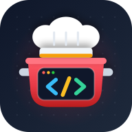

개발자의레시피
</> Developer's Recipe · v1.5
인분·양념 스마트 계량과 멀티 타이머를 지원하는 나만의 요리 북
🔄
최신 레시피 확인 중
🌶️ 고추장 비율 100%
🧭 메인 메뉴
📖
전체 레시피 보기
›
등록된 모든 요리 둘러보기
🫙
밀프렙 · 양념 모드
›
양념육·만능소스 미리 만들기
⏱️
주방 빠른 타이머
›
독립 멀티 타이머 바로 실행
⚙️
입맛 & 앱 설정
›
고추장 비율 · 양념 · 동기화
🍽️ 카테고리별 바로가기
🕘 최근에 본 요리
전체 목록 보기 →
🕘 최근에 본 (30초+)
🆕 최근 추가된
🔥 많이 본
← 홈
📖 레시피 목록
🌶️ 고추장 100%
전체 보기
🕘 최근에 본 (30초+)
🆕 최근 추가된
🔥 많이 본
🔍
🍳 레시피를 불러오는 중입니다...
← 홈
⚙️ 입맛 & 앱 설정
🏠
홈
📖
레시피
⚙️
설정
🔆 화면 켜짐 유지 OFF
✕
저장되었습니다!